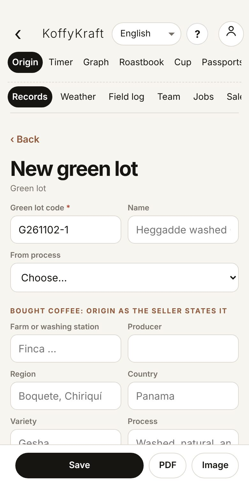
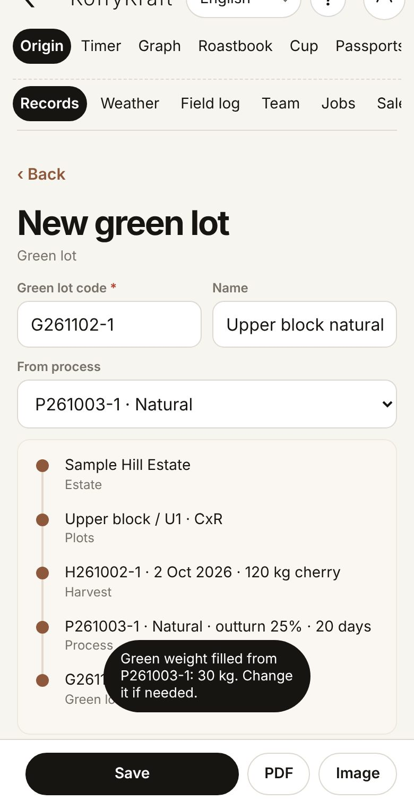
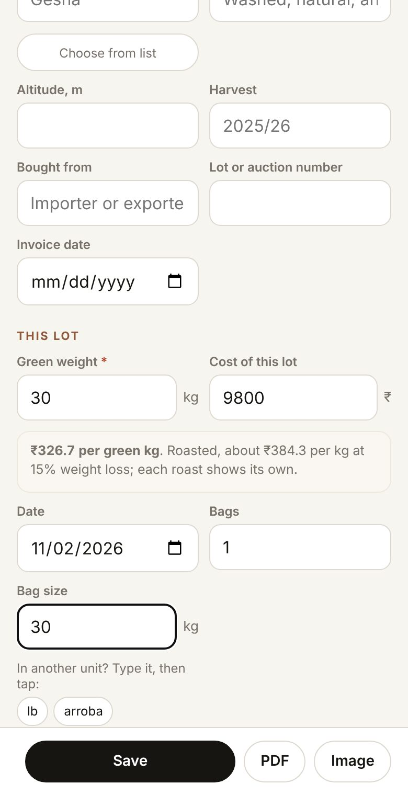
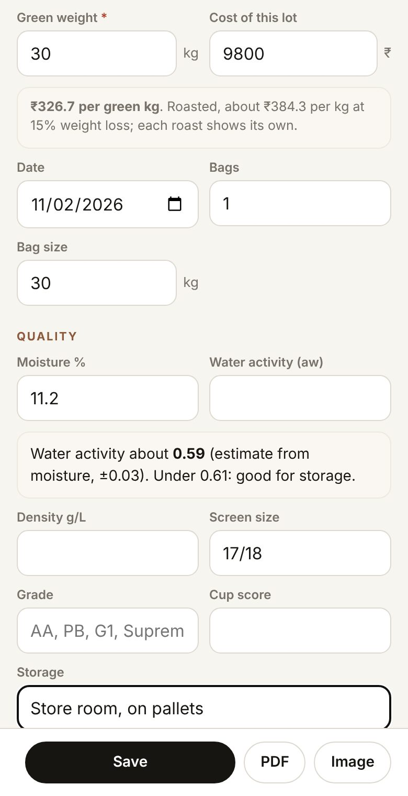
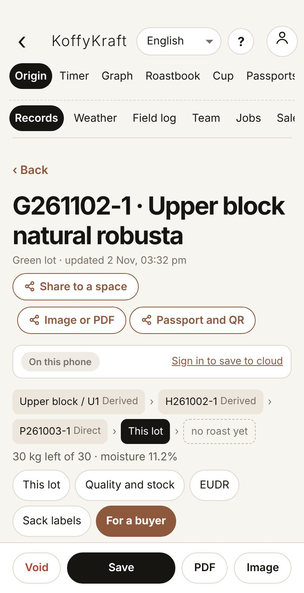
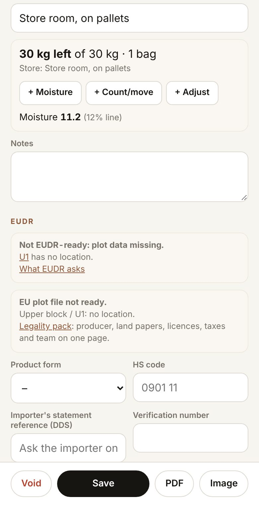
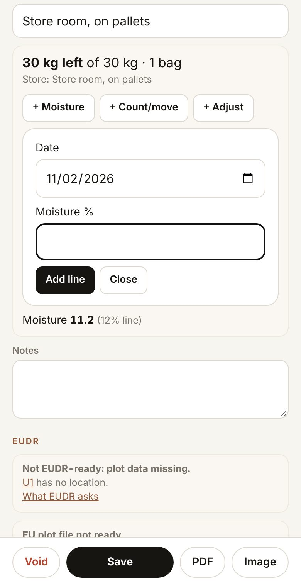
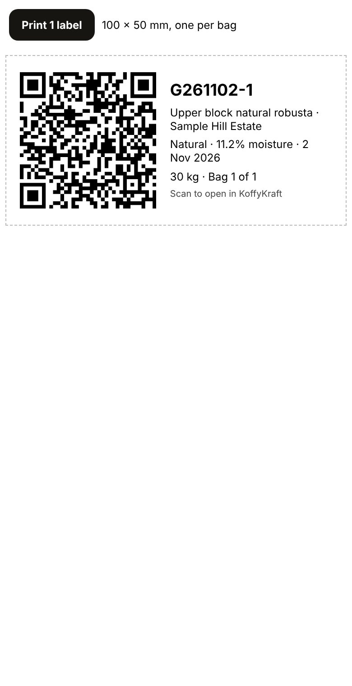

Part 3 From harvest to green coffee · Chapter 10
Green lots
The green coffee itself: how much there is, what it cost, how dry it is, where it is stored, and what is left as roasts and sales draw on it. Your own coffee or coffee you bought in.
What this part is for
A green lot is what goes to the roaster. For your own coffee, it points back to its process run, and through the run to the harvests and plots. For bought coffee, it keeps the origin as the seller states it. Every roast you make later picks a green lot as its source, and the lot's stock goes down by itself.
Make a green lot from your own run
Open Origin, then the Green tab, and tap + Green lot. You will see New green lot with a Green lot code made from today's date (G, then year, month and day).

A new green lot Give it a Name people will recognise, such as Upper block natural robusta.
Under From process, pick the run it came from. You will see the chain from that run, and a message: Green weight filled from the run, with the kilos. The weight is taken from the run's last Out kg. Change it if the scale says otherwise.

The run picked: its chain shows, and the weight fills in Under This lot, check the Green weight (required). Type the Cost of this lot if you know it: what you paid, or what it cost to grow and process. You will see the cost per green kilo, and about what a roasted kilo costs at 15% weight loss. Each roast later shows its own. Add the Bags and the Bag size if it is bagged.

30 kg in one 30 kg bag, with its cost Under Quality, type the Moisture % from your meter. If you have no water activity meter, the app gives an estimate from the moisture (between 10 and 13% only), and says whether it is good for storage. The estimate is worked out from arabica figures, so treat it as rough, more so for robusta. Add Density g/L, Screen size, Grade and Cup score when you have them, and where it is kept under Storage.

Moisture 11.2%: water activity about 0.59 Tap Save. You will see the lot's own page: its name, the chain back to plot, harvest and run, how much is left, and buttons for each part of the lot: This lot, Quality and stock, EUDR, Sack labels and For a buyer.

The saved green lot, linked back to its plot
Coffee you bought in
Leave From process empty and fill Bought coffee: origin as the seller states it: Farm or washing station, Producer, Region, Country, Variety, Process, Altitude, m, Harvest, Bought from, Lot or auction number and Invoice date. Type exactly what the seller's papers say. Then carry on from step 4.
Keep the stock right
The stock goes down as roasts use the lot. For everything else (a sample sent, a bag sold, a recount in the store), add a line.
On the lot's page, tap Quality and stock. You will see how many kilos are left of the lot, how many full bags that makes, and where it is stored.

Stock: 30 kg left of 30 kg Tap the line you need: + Moisture for a new moisture reading (the lot keeps every reading, so you can watch it dry out or take up water in storage). + Count/move after counting the bags or moving them. + Adjust for anything else that changes the kilos.

Adding a moisture reading Fill in the line and tap Add line, then Save at the bottom.
Sack labels
On the lot's page, tap Sack labels. You will see one label for each bag, 100 by 50 mm, with a QR code, the lot code, its name and estate, the process, moisture and date, and Bag 1 of 1.

One sack label Tap the Print button at the top. Each label prints on its own page.
The QR opens this lot in the app. Once the lot has a passport (chapter 11), the QR opens the passport instead, which anyone can check.
What comes next
Chapter 11 turns this green lot into a lot passport with a QR any buyer can check. Chapter 12 covers the EUDR section of the lot, for coffee that will be sold into Europe. Roasts that use this lot are in chapter 13.